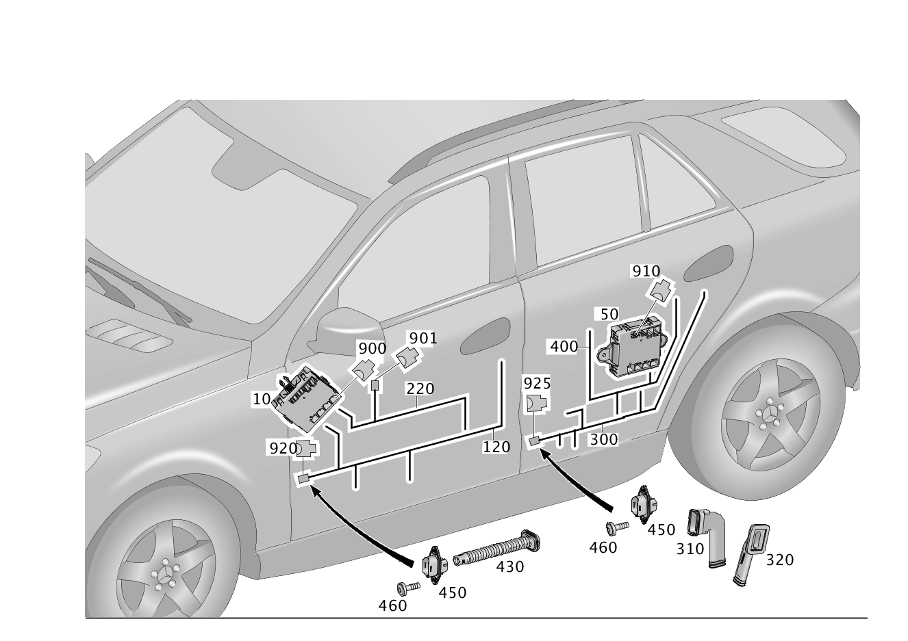

| № | Артикул | Название | Кол. | Примечание |
|---|---|---|---|---|
| 10 | A 166 900 50 04 | Блок управления | 1 | Дверь спереди слева |
| 10 | A 166 900 55 05 | Блок управления (STEUERGERAET) | 1 | Дверь спереди слева |
| 10 | A 166 900 40 02 | Блок управления (STEUERGERAET) | 1 | Дверь спереди слева |
| 10 | A 166 900 96 14 | Блок управления (STEUERGERAET) | 1 | Дверь спереди слева |
| 10 | A 166 900 02 18 | Блок управления (STEUERGERAET) | 1 | Дверь спереди слева |
| 10 | A 166 900 02 18 | Блок управления (STEUERGERAET) | 1 | Дверь спереди слева |
| 10 | A 166 900 41 02 | Блок управления (STEUERGERAET) | 1 | Дверь спереди слева |
| 10 | A 166 900 41 02 | Блок управления (STEUERGERAET) | 1 | Дверь спереди слева |
| 10 | A 166 900 97 14 | Блок управления (STEUERGERAET) | 1 | Дверь спереди слева |
| 10 | A 166 900 03 18 | Блок управления (STEUERGERAET) | 1 | Дверь спереди слева |
| 10 | A 166 900 97 14 | Блок управления (STEUERGERAET) | 1 | Дверь спереди слева |
| 10 | A 166 900 03 18 | Блок управления (STEUERGERAET) | 1 | Дверь спереди слева |
| 10 | A 166 900 03 18 | Блок управления (STEUERGERAET) | 1 | Дверь спереди слева |
| 10 | A 166 900 03 18 | Блок управления (STEUERGERAET) | 1 | Дверь спереди слева |
| 10 | A 166 900 41 02 | Блок управления (STEUERGERAET) | 1 | Дверь спереди слева |
| 10 | A 166 900 97 14 | Блок управления (STEUERGERAET) | 1 | Дверь спереди слева |
| 10 | A 166 900 03 18 | Блок управления (STEUERGERAET) | 1 | Дверь спереди слева |
| 10 | A 166 900 03 18 | Блок управления (STEUERGERAET) | 1 | Дверь спереди слева |
| 10 | A 166 900 60 05 | Блок управления (STEUERGERAET) | 1 | Дверь спереди справа |
| 10 | A 166 900 43 02 | Блок управления (STEUERGERAET) | 1 | Дверь спереди справа |
| 10 | A 166 900 99 14 | Блок управления (STEUERGERAET) | 1 | Дверь спереди справа |
| 10 | A 166 900 05 18 | Блок управления (STEUERGERAET) | 1 | Дверь спереди справа |
| 10 | A 166 900 05 18 | Блок управления (STEUERGERAET) | 1 | Дверь спереди справа |
| 10 | A 166 900 40 02 | Блок управления (STEUERGERAET) | 1 | Дверь спереди слева |
| 10 | A 166 900 96 14 | Блок управления (STEUERGERAET) | 1 | Дверь спереди слева |
| 10 | A 166 900 02 18 | Блок управления (STEUERGERAET) | 1 | Дверь спереди слева |
| 10 | A 166 900 02 18 | Блок управления (STEUERGERAET) | 1 | Дверь спереди слева |
| 10 | A 166 900 44 02 | Блок управления (STEUERGERAET) | 1 | Дверь спереди справа |
| 10 | A 166 900 00 15 | Блок управления (STEUERGERAET) | 1 | Дверь спереди справа |
| 10 | A 166 900 06 18 | Блок управления (STEUERGERAET) | 1 | Дверь спереди справа |
| 10 | A 166 900 06 18 | Блок управления (STEUERGERAET) | 1 | Дверь спереди справа |
| 10 | A 166 900 00 15 | Блок управления (STEUERGERAET) | 1 | Дверь спереди справа |
| 10 | A 166 900 06 18 | Блок управления (STEUERGERAET) | 1 | Дверь спереди справа |
| 10 | A 166 900 06 18 | Блок управления (STEUERGERAET) | 1 | Дверь спереди справа |
| 50 | A 166 900 62 07 | Блок управления (STEUERGERAET) | 1 | Дверь сзади слева |
| 50 | A 166 900 63 07 | Блок управления (STEUERGERAET) | 1 | Дверь сзади слева |
| 50 | A 166 900 64 07 | Блок управления (STEUERGERAET) | 1 | Дверь сзади справа |
| 50 | A 166 900 56 12 | Блок управления (STEUERGERAET) | 1 | Дверь сзади справа |
| 50 | A 166 900 65 07 | Блок управления (STEUERGERAET) | 1 | Дверь сзади справа |
| 120 | A 166 540 39 03 | Электрический жгут (ELEKTRISCHER LEITUNGSSATZ) | 1 | Дверь спереди слева, разъем двери к блоку управления и потребителю |
| 120 | A 166 540 40 03 | Электрический жгут (ELEKTRISCHER LEITUNGSSATZ) | 1 | Дверь спереди слева, разъем двери к блоку управления и потребителю |
| 120 | A 166 540 41 03 | Электрический жгут (ELEKTRISCHER LEITUNGSSATZ) | 1 | Дверь спереди слева, разъем двери к блоку управления и потребителю |
| 120 | A 166 540 42 03 | Электрический жгут (ELEKTRISCHER LEITUNGSSATZ) | 1 | Дверь спереди слева, разъем двери к блоку управления и потребителю |
| 120 | A 166 540 44 03 | Электрический жгут (ELEKTRISCHER LEITUNGSSATZ) | 1 | Дверь спереди слева, разъем двери к блоку управления и потребителю |
| 120 | A 166 540 45 03 | Электрический жгут (ELEKTRISCHER LEITUNGSSATZ) | 1 | Дверь спереди слева, разъем двери к блоку управления и потребителю |
| 120 | A 166 540 46 03 | Электрический жгут (ELEKTRISCHER LEITUNGSSATZ) | 1 | Дверь спереди слева, разъем двери к блоку управления и потребителю |
| 120 | A 292 540 05 00 | Электрический жгут (ELEKTRISCHER LEITUNGSSATZ) | 1 | Дверь спереди слева, разъем двери к блоку управления и потребителю |
| 120 | A 292 540 06 00 | Электрический жгут (ELEKTRISCHER LEITUNGSSATZ) | 1 | Дверь спереди слева, разъем двери к блоку управления и потребителю |
| 120 | A 292 540 12 00 | Электрический жгут (ELEKTRISCHER LEITUNGSSATZ) | 1 | Дверь спереди слева, разъем двери к блоку управления и потребителю |
| 120 | A 292 540 07 00 | Электрический жгут (ELEKTRISCHER LEITUNGSSATZ) | 1 | Дверь спереди слева, разъем двери к блоку управления и потребителю |
| 120 | A 292 540 16 00 | Электрический жгут | 1 | Дверь спереди слева, разъем двери к блоку управления и потребителю |
| 120 | A 166 540 58 03 | Электрический жгут (ELEKTRISCHER LEITUNGSSATZ) | 1 | Дверь спереди слева, разъем двери к блоку управления и потребителю |
| 120 | A 292 540 14 00 | Электрический жгут | 1 | Дверь спереди слева, разъем двери к блоку управления и потребителю |
| 120 | A 292 540 13 00 | Электрический жгут | 1 | Дверь спереди слева, разъем двери к блоку управления и потребителю |
| 120 | A 166 540 60 03 | Электрический жгут (ELEKTRISCHER LEITUNGSSATZ) | 1 | Дверь спереди слева, разъем двери к блоку управления и потребителю |
| 120 | A 166 540 70 03 | Электрический жгут (ELEKTRISCHER LEITUNGSSATZ) | 1 | Дверь спереди слева, разъем двери к блоку управления и потребителю |
| 120 | A 166 540 61 03 | Электрический жгут (ELEKTRISCHER LEITUNGSSATZ) | 1 | Дверь спереди слева, разъем двери к блоку управления и потребителю |
| 120 | A 166 540 39 03 | Электрический жгут (ELEKTRISCHER LEITUNGSSATZ) | 1 | Дверь спереди справа, разъем двери к блоку управления и потребителю |
| 120 | A 166 540 40 03 | Электрический жгут (ELEKTRISCHER LEITUNGSSATZ) | 1 | Дверь спереди справа, разъем двери к блоку управления и потребителю |
| 120 | A 166 540 42 03 | Электрический жгут (ELEKTRISCHER LEITUNGSSATZ) | 1 | Дверь спереди справа, разъем двери к блоку управления и потребителю |
| 120 | A 166 540 55 03 | Электрический жгут (ELEKTRISCHER LEITUNGSSATZ) | 1 | Дверь спереди справа, разъем двери к блоку управления и потребителю |
| 120 | A 166 540 41 03 | Электрический жгут (ELEKTRISCHER LEITUNGSSATZ) | 1 | Дверь спереди справа, разъем двери к блоку управления и потребителю |
| 120 | A 166 540 56 03 | Электрический жгут | 1 | Дверь спереди справа, разъем двери к блоку управления и потребителю |
| 120 | A 166 540 44 03 | Электрический жгут (ELEKTRISCHER LEITUNGSSATZ) | 1 | Дверь спереди справа, разъем двери к блоку управления и потребителю |
| 120 | A 166 540 57 03 | Электрический жгут (ELEKTRISCHER LEITUNGSSATZ) | 1 | Дверь спереди справа, разъем двери к блоку управления и потребителю |
| 120 | A 166 540 45 03 | Электрический жгут (ELEKTRISCHER LEITUNGSSATZ) | 1 | Дверь спереди справа, разъем двери к блоку управления и потребителю |
| 120 | A 166 540 58 03 | Электрический жгут (ELEKTRISCHER LEITUNGSSATZ) | 1 | Дверь спереди справа, разъем двери к блоку управления и потребителю |
| 120 | A 166 540 59 03 | Электрический жгут | 1 | Дверь спереди справа, разъем двери к блоку управления и потребителю |
| 120 | A 166 540 46 03 | Электрический жгут (ELEKTRISCHER LEITUNGSSATZ) | 1 | Дверь спереди справа, разъем двери к блоку управления и потребителю |
| 120 | A 166 540 60 03 | Электрический жгут (ELEKTRISCHER LEITUNGSSATZ) | 1 | Дверь спереди справа, разъем двери к блоку управления и потребителю |
| 120 | A 166 540 61 03 | Электрический жгут (ELEKTRISCHER LEITUNGSSATZ) | 1 | Дверь спереди справа, разъем двери к блоку управления и потребителю |
| 120 | A 166 540 70 03 | Электрический жгут (ELEKTRISCHER LEITUNGSSATZ) | 1 | Дверь спереди справа, разъем двери к блоку управления и потребителю |
| 120 | A 292 540 05 00 | Электрический жгут (ELEKTRISCHER LEITUNGSSATZ) | 1 | Дверь спереди справа, разъем двери к блоку управления и потребителю |
| 120 | A 292 540 06 00 | Электрический жгут (ELEKTRISCHER LEITUNGSSATZ) | 1 | Дверь спереди справа, разъем двери к блоку управления и потребителю |
| 120 | A 292 540 07 00 | Электрический жгут (ELEKTRISCHER LEITUNGSSATZ) | 1 | Дверь спереди справа, разъем двери к блоку управления и потребителю |
| 120 | A 166 440 53 08 | Электрический жгут (ELEKTRISCHER LEITUNGSSATZ) | 1 | Дверь спереди слева, разъем двери к блоку управления и потребителю |
| 120 | A 166 440 20 08 | Электрический жгут (ELEKTRISCHER LEITUNGSSATZ) | 1 | Дверь спереди слева, разъем двери к блоку управления и потребителю |
| 120 | A 166 440 56 08 | Электрический жгут (ELEKTRISCHER LEITUNGSSATZ) | 1 | Дверь спереди слева, разъем двери к блоку управления и потребителю |
| 120 | A 166 540 47 03 | Электрический жгут (ELEKTRISCHER LEITUNGSSATZ) | 1 | Дверь спереди слева, разъем двери к блоку управления и потребителю |
| 120 | A 292 540 20 00 | Электрический жгут (ELEKTRISCHER LEITUNGSSATZ) | 1 | Дверь спереди справа, разъем двери к блоку управления и потребителю |
| 120 | A 166 540 48 03 | Электрический жгут (ELEKTRISCHER LEITUNGSSATZ) | 1 | Дверь спереди слева, разъем двери к блоку управления и потребителю |
| 120 | A 292 540 21 00 | Электрический жгут (ELEKTRISCHER LEITUNGSSATZ) | 1 | Дверь спереди справа, разъем двери к блоку управления и потребителю |
| 120 | A 166 540 50 03 | Электрический жгут (ELEKTRISCHER LEITUNGSSATZ) | 1 | Дверь спереди слева, разъем двери к блоку управления и потребителю |
| 120 | A 292 540 23 00 | Электрический жгут (ELEKTRISCHER LEITUNGSSATZ) | 1 | Дверь спереди справа, разъем двери к блоку управления и потребителю |
| 120 | A 166 440 41 35 | Электрический жгут (ELEKTRISCHER LEITUNGSSATZ) | 1 | Дверь спереди слева, разъем двери к блоку управления и потребителю |
| 120 | A 166 540 51 03 | Электрический жгут (ELEKTRISCHER LEITUNGSSATZ) | 1 | Дверь спереди слева, разъем двери к блоку управления и потребителю |
| 120 | A 166 440 46 35 | Электрический жгут (ELEKTRISCHER LEITUNGSSATZ) | 1 | Дверь спереди слева, разъем двери к блоку управления и потребителю |
| 120 | A 166 540 52 03 | Электрический жгут (ELEKTRISCHER LEITUNGSSATZ) | 1 | Дверь спереди слева, разъем двери к блоку управления и потребителю |
| 120 | A 166 440 47 35 | Электрический жгут (ELEKTRISCHER LEITUNGSSATZ) | 1 | Дверь спереди слева, разъем двери к блоку управления и потребителю |
| 120 | A 166 540 53 03 | Электрический жгут (ELEKTRISCHER LEITUNGSSATZ) | 1 | Дверь спереди слева, разъем двери к блоку управления и потребителю |
| 120 | A 166 540 54 03 | Электрический жгут (ELEKTRISCHER LEITUNGSSATZ) | 1 | Дверь спереди слева, разъем двери к блоку управления и потребителю |
| 120 | A 292 540 27 00 | Электрический жгут (ELEKTRISCHER LEITUNGSSATZ) | 1 | Дверь спереди справа, разъем двери к блоку управления и потребителю |
| 120 | A 292 540 27 00 | Электрический жгут (ELEKTRISCHER LEITUNGSSATZ) | 1 | Дверь спереди слева, разъем двери к блоку управления и потребителю |
| 120 | A 166 540 54 03 | Электрический жгут (ELEKTRISCHER LEITUNGSSATZ) | 1 | Дверь спереди справа, разъем двери к блоку управления и потребителю |
| 120 | A 166 540 43 03 | Электрический жгут (ELEKTRISCHER LEITUNGSSATZ) | 1 | Дверь спереди слева, разъем двери к блоку управления и потребителю |
| 120 | A 166 440 99 06 | Электрический жгут (ELEKTRISCHER LEITUNGSSATZ) | 1 | Дверь спереди слева, разъем двери к блоку управления и потребителю |
| 120 | A 166 540 43 03 | Электрический жгут (ELEKTRISCHER LEITUNGSSATZ) | 1 | Дверь спереди справа, разъем двери к блоку управления и потребителю |
| 120 | A 292 540 04 00 | Электрический жгут (ELEKTRISCHER LEITUNGSSATZ) | 1 | Дверь спереди слева, разъем двери к блоку управления и потребителю |
| 120 | A 292 540 32 00 | Электрический жгут (ELEKTRISCHER LEITUNGSSATZ) | 1 | Дверь спереди слева, разъем двери к блоку управления и потребителю |
| 120 | A 292 540 04 00 | Электрический жгут (ELEKTRISCHER LEITUNGSSATZ) | 1 | Дверь спереди справа, разъем двери к блоку управления и потребителю |
| 120 | A 166 540 66 03 | Электрический жгут (ELEKTRISCHER LEITUNGSSATZ) | 1 | Дверь спереди справа, разъем двери к блоку управления и потребителю |
| 120 | A 292 540 29 00 | Электрический жгут (ELEKTRISCHER LEITUNGSSATZ) | 1 | Дверь спереди слева, разъем двери к блоку управления и потребителю |
| 120 | A 166 540 63 03 | Электрический жгут (ELEKTRISCHER LEITUNGSSATZ) | 1 | Дверь спереди справа, разъем двери к блоку управления и потребителю |
| 120 | A 166 540 49 03 | Электрический жгут (ELEKTRISCHER LEITUNGSSATZ) | 1 | Дверь спереди слева, разъем двери к блоку управления и потребителю |
| 120 | A 166 440 24 35 | Электрический жгут (ELEKTRISCHER LEITUNGSSATZ) | 1 | Дверь спереди справа, разъем двери к блоку управления и потребителю |
| 120 | A 166 540 49 03 | Электрический жгут (ELEKTRISCHER LEITUNGSSATZ) | 1 | Дверь спереди справа, разъем двери к блоку управления и потребителю |
| 120 | A 166 440 26 35 | Электрический жгут (ELEKTRISCHER LEITUNGSSATZ) | 1 | Дверь спереди справа, разъем двери к блоку управления и потребителю |
| 120 | A 166 440 25 35 | Электрический жгут (ELEKTRISCHER LEITUNGSSATZ) | 1 | Дверь спереди справа, разъем двери к блоку управления и потребителю |
| 120 | A 166 440 28 35 | Электрический жгут (ELEKTRISCHER LEITUNGSSATZ) | 1 | Дверь спереди справа, разъем двери к блоку управления и потребителю |
| 120 | A 166 440 29 35 | Электрический жгут (ELEKTRISCHER LEITUNGSSATZ) | 1 | Дверь спереди справа, разъем двери к блоку управления и потребителю |
| 120 | A 166 440 27 35 | Электрический жгут (ELEKTRISCHER LEITUNGSSATZ) | 1 | Дверь спереди справа, разъем двери к блоку управления и потребителю |
| 120 | A 166 440 31 35 | Электрический жгут (ELEKTRISCHER LEITUNGSSATZ) | 1 | Дверь спереди справа, разъем двери к блоку управления и потребителю |
| 120 | A 166 440 30 35 | Электрический жгут (ELEKTRISCHER LEITUNGSSATZ) | 1 | Дверь спереди справа, разъем двери к блоку управления и потребителю |
| 120 | A 292 540 20 00 | Электрический жгут (ELEKTRISCHER LEITUNGSSATZ) | 1 | Дверь спереди слева, разъем двери к блоку управления и потребителю |
| 120 | A 166 540 47 03 | Электрический жгут (ELEKTRISCHER LEITUNGSSATZ) | 1 | Дверь спереди справа, разъем двери к блоку управления и потребителю |
| 120 | A 292 540 21 00 | Электрический жгут (ELEKTRISCHER LEITUNGSSATZ) | 1 | Дверь спереди слева, разъем двери к блоку управления и потребителю |
| 120 | A 166 540 48 03 | Электрический жгут (ELEKTRISCHER LEITUNGSSATZ) | 1 | Дверь спереди справа, разъем двери к блоку управления и потребителю |
| 120 | A 166 440 40 35 | Электрический жгут (ELEKTRISCHER LEITUNGSSATZ) | 1 | Дверь спереди справа, разъем двери к блоку управления и потребителю |
| 120 | A 292 540 23 00 | Электрический жгут (ELEKTRISCHER LEITUNGSSATZ) | 1 | Дверь спереди слева, разъем двери к блоку управления и потребителю |
| 120 | A 166 540 50 03 | Электрический жгут (ELEKTRISCHER LEITUNGSSATZ) | 1 | Дверь спереди справа, разъем двери к блоку управления и потребителю |
| 120 | A 292 540 28 00 | Электрический жгут (ELEKTRISCHER LEITUNGSSATZ) | 1 | Дверь спереди слева, разъем двери к блоку управления и потребителю |
| 120 | A 166 540 62 03 | Электрический жгут (ELEKTRISCHER LEITUNGSSATZ) | 1 | Дверь спереди справа, разъем двери к блоку управления и потребителю |
| 120 | A 166 440 47 35 | Электрический жгут (ELEKTRISCHER LEITUNGSSATZ) | 1 | Дверь спереди справа, разъем двери к блоку управления и потребителю |
| 120 | A 166 540 53 03 | Электрический жгут (ELEKTRISCHER LEITUNGSSATZ) | 1 | Дверь спереди справа, разъем двери к блоку управления и потребителю |
| 120 | A 166 540 64 03 | Электрический жгут (ELEKTRISCHER LEITUNGSSATZ) | 1 | Дверь спереди слева, разъем двери к блоку управления и потребителю |
| 120 | A 166 440 42 35 | Электрический жгут (ELEKTRISCHER LEITUNGSSATZ) | 1 | Дверь спереди справа, разъем двери к блоку управления и потребителю |
| 120 | A 166 540 64 03 | Электрический жгут (ELEKTRISCHER LEITUNGSSATZ) | 1 | Дверь спереди справа, разъем двери к блоку управления и потребителю |
| 120 | A 166 440 41 35 | Электрический жгут (ELEKTRISCHER LEITUNGSSATZ) | 1 | Дверь спереди справа, разъем двери к блоку управления и потребителю |
| 120 | A 166 540 51 03 | Электрический жгут (ELEKTRISCHER LEITUNGSSATZ) | 1 | Дверь спереди справа, разъем двери к блоку управления и потребителю |
| 120 | A 166 440 46 35 | Электрический жгут (ELEKTRISCHER LEITUNGSSATZ) | 1 | Дверь спереди справа, разъем двери к блоку управления и потребителю |
| 120 | A 166 540 52 03 | Электрический жгут (ELEKTRISCHER LEITUNGSSATZ) | 1 | Дверь спереди справа, разъем двери к блоку управления и потребителю |
| 120 | A 292 540 31 00 | Электрический жгут (ELEKTRISCHER LEITUNGSSATZ) | 1 | Дверь спереди слева, разъем двери к блоку управления и потребителю |
| 120 | A 166 540 65 03 | Электрический жгут (ELEKTRISCHER LEITUNGSSATZ) | 1 | Дверь спереди справа, разъем двери к блоку управления и потребителю |
| 120 | A 166 540 68 03 | Электрический жгут (ELEKTRISCHER LEITUNGSSATZ) | 1 | Дверь спереди слева, разъем двери к блоку управления и потребителю |
| 120 | A 166 440 44 35 | Электрический жгут (ELEKTRISCHER LEITUNGSSATZ) | 1 | Дверь спереди справа, разъем двери к блоку управления и потребителю |
| 120 | A 166 540 68 03 | Электрический жгут (ELEKTRISCHER LEITUNGSSATZ) | 1 | Дверь спереди справа, разъем двери к блоку управления и потребителю |
| 120 | A 166 540 69 03 | Электрический жгут (ELEKTRISCHER LEITUNGSSATZ) | 1 | Дверь спереди слева, разъем двери к блоку управления и потребителю |
| 120 | A 166 440 45 35 | Электрический жгут (ELEKTRISCHER LEITUNGSSATZ) | 1 | Дверь спереди справа, разъем двери к блоку управления и потребителю |
| 120 | A 166 540 69 03 | Электрический жгут (ELEKTRISCHER LEITUNGSSATZ) | 1 | Дверь спереди справа, разъем двери к блоку управления и потребителю |
| 120 | A 166 540 67 03 | Электрический жгут (ELEKTRISCHER LEITUNGSSATZ) | 1 | Дверь спереди слева, разъем двери к блоку управления и потребителю |
| 120 | A 166 440 43 35 | Электрический жгут (ELEKTRISCHER LEITUNGSSATZ) | 1 | Дверь спереди справа, разъем двери к блоку управления и потребителю |
| 120 | A 166 540 67 03 | Электрический жгут (ELEKTRISCHER LEITUNGSSATZ) | 1 | Дверь спереди справа, разъем двери к блоку управления и потребителю |
| 120 | A 166 440 00 07 | Электрический жгут (ELEKTRISCHER LEITUNGSSATZ) | 1 | Дверь спереди слева, разъем двери к блоку управления и потребителю |
| 120 | A 166 540 89 04 | Электрический жгут (ELEKTRISCHER LEITUNGSSATZ) | 1 | Дверь спереди слева, разъем двери к блоку управления и потребителю |
| 120 | A 292 540 76 00 | Электрический жгут (ELEKTRISCHER LEITUNGSSATZ) | 1 | Дверь спереди справа, разъем двери к блоку управления и потребителю |
| 120 | A 292 540 76 00 | Электрический жгут (ELEKTRISCHER LEITUNGSSATZ) | 1 | Дверь спереди слева, разъем двери к блоку управления и потребителю |
| 120 | A 166 540 89 04 | Электрический жгут (ELEKTRISCHER LEITUNGSSATZ) | 1 | Дверь спереди справа, разъем двери к блоку управления и потребителю |
| 120 | A 166 440 48 35 | Электрический жгут (ELEKTRISCHER LEITUNGSSATZ) | 1 | Дверь спереди слева, разъем двери к блоку управления и потребителю |
| 120 | A 166 540 90 04 | Электрический жгут (ELEKTRISCHER LEITUNGSSATZ) | 1 | Дверь спереди слева, разъем двери к блоку управления и потребителю |
| 120 | A 166 440 48 35 | Электрический жгут (ELEKTRISCHER LEITUNGSSATZ) | 1 | Дверь спереди справа, разъем двери к блоку управления и потребителю |
| 120 | A 166 540 90 04 | Электрический жгут (ELEKTRISCHER LEITUNGSSATZ) | 1 | Дверь спереди справа, разъем двери к блоку управления и потребителю |
| 120 | A 166 540 92 04 | Электрический жгут (ELEKTRISCHER LEITUNGSSATZ) | 1 | Дверь спереди слева, разъем двери к блоку управления и потребителю |
| 120 | A 292 540 79 00 | Электрический жгут (ELEKTRISCHER LEITUNGSSATZ) | 1 | Дверь спереди справа, разъем двери к блоку управления и потребителю |
| 120 | A 292 540 79 00 | Электрический жгут (ELEKTRISCHER LEITUNGSSATZ) | 1 | Дверь спереди слева, разъем двери к блоку управления и потребителю |
| 120 | A 166 540 92 04 | Электрический жгут (ELEKTRISCHER LEITUNGSSATZ) | 1 | Дверь спереди справа, разъем двери к блоку управления и потребителю |
| 120 | A 166 440 50 35 | Электрический жгут (ELEKTRISCHER LEITUNGSSATZ) | 1 | Дверь спереди слева, разъем двери к блоку управления и потребителю |
| 120 | A 166 540 95 04 | Электрический жгут (ELEKTRISCHER LEITUNGSSATZ) | 1 | Дверь спереди справа, разъем двери к блоку управления и потребителю |
| 120 | A 166 540 95 04 | Электрический жгут (ELEKTRISCHER LEITUNGSSATZ) | 1 | Дверь спереди слева, разъем двери к блоку управления и потребителю |
| 120 | A 166 440 50 35 | Электрический жгут (ELEKTRISCHER LEITUNGSSATZ) | 1 | Дверь спереди справа, разъем двери к блоку управления и потребителю |
| 120 | A 166 440 01 07 | Электрический жгут (ELEKTRISCHER LEITUNGSSATZ) | 1 | Дверь спереди слева, разъем двери к блоку управления и потребителю |
| 120 | A 166 440 28 08 | Электрический жгут (ELEKTRISCHER LEITUNGSSATZ) | 1 | Дверь спереди слева, разъем двери к блоку управления и потребителю |
| 120 | A 166 440 00 09 | Электрический жгут (ELEKTRISCHER LEITUNGSSATZ) | 1 | Дверь спереди слева, разъем двери к блоку управления и потребителю |
| 120 | A 166 440 80 10 | Электрический жгут (ELEKTRISCHER LEITUNGSSATZ) | 1 | Дверь спереди слева, разъем двери к блоку управления и потребителю |
| 120 | A 166 440 29 08 | Электрический жгут | 1 | Дверь спереди слева, разъем двери к блоку управления и потребителю |
| 120 | A 166 440 01 09 | Электрический жгут (ELEKTRISCHER LEITUNGSSATZ) | 1 | Дверь спереди слева, разъем двери к блоку управления и потребителю |
| 120 | A 166 440 30 08 | Электрический жгут (ELEKTRISCHER LEITUNGSSATZ) | 1 | Дверь спереди слева, разъем двери к блоку управления и потребителю |
| 120 | A 166 440 02 09 | Электрический жгут (ELEKTRISCHER LEITUNGSSATZ) | 1 | Дверь спереди слева, разъем двери к блоку управления и потребителю |
| 120 | A 166 540 91 04 | Электрический жгут (ELEKTRISCHER LEITUNGSSATZ) | 1 | Дверь спереди слева, разъем двери к блоку управления и потребителю |
| 120 | A 292 540 78 00 | Электрический жгут (ELEKTRISCHER LEITUNGSSATZ) | 1 | Дверь спереди слева, разъем двери к блоку управления и потребителю |
| 120 | A 166 540 94 04 | Электрический жгут (ELEKTRISCHER LEITUNGSSATZ) | 1 | Дверь спереди слева, разъем двери к блоку управления и потребителю |
| 120 | A 166 440 49 35 | Электрический жгут (ELEKTRISCHER LEITUNGSSATZ) | 1 | Дверь спереди справа, разъем двери к блоку управления и потребителю |
| 120 | A 166 540 94 04 | Электрический жгут (ELEKTRISCHER LEITUNGSSATZ) | 1 | Дверь спереди справа, разъем двери к блоку управления и потребителю |
| 120 | A 166 540 55 11 | Электрический жгут (ELEKTRISCHER LEITUNGSSATZ) | 1 | Дверь спереди слева, разъем двери к блоку управления и потребителю |
| 120 | A 292 540 86 00 | Электрический жгут (ELEKTRISCHER LEITUNGSSATZ) | 1 | Дверь спереди справа, разъем двери к блоку управления и потребителю |
| 120 | A 166 540 97 04 | Электрический жгут (ELEKTRISCHER LEITUNGSSATZ) | 1 | Дверь спереди слева, разъем двери к блоку управления и потребителю |
| 120 | A 166 440 52 35 | Электрический жгут (ELEKTRISCHER LEITUNGSSATZ) | 1 | Дверь спереди справа, разъем двери к блоку управления и потребителю |
| 120 | A 166 540 97 04 | Электрический жгут (ELEKTRISCHER LEITUNGSSATZ) | 1 | Дверь спереди справа, разъем двери к блоку управления и потребителю |
| 120 | A 292 540 80 00 | Электрический жгут (ELEKTRISCHER LEITUNGSSATZ) | 1 | Дверь спереди справа, разъем двери к блоку управления и потребителю |
| 120 | A 292 540 86 00 | Электрический жгут (ELEKTRISCHER LEITUNGSSATZ) | 1 | Дверь спереди слева, разъем двери к блоку управления и потребителю |
| 120 | A 166 540 55 11 | Электрический жгут (ELEKTRISCHER LEITUNGSSATZ) | 1 | Дверь спереди справа, разъем двери к блоку управления и потребителю |
| 120 | A 166 440 03 07 | Электрический жгут (ELEKTRISCHER LEITUNGSSATZ) | 1 | Дверь спереди справа, разъем двери к блоку управления и потребителю |
| 120 | A 166 540 56 11 | Электрический жгут (ELEKTRISCHER LEITUNGSSATZ) | 1 | Дверь спереди слева, разъем двери к блоку управления и потребителю |
| 120 | A 292 540 85 00 | Электрический жгут (ELEKTRISCHER LEITUNGSSATZ) | 1 | Дверь спереди слева, разъем двери к блоку управления и потребителю |
| 120 | A 166 540 56 11 | Электрический жгут (ELEKTRISCHER LEITUNGSSATZ) | 1 | Дверь спереди справа, разъем двери к блоку управления и потребителю |
| 120 | A 292 540 85 00 | Электрический жгут (ELEKTRISCHER LEITUNGSSATZ) | 1 | Дверь спереди справа, разъем двери к блоку управления и потребителю |
| 120 | A 166 540 93 04 | Электрический жгут (ELEKTRISCHER LEITUNGSSATZ) | 1 | Дверь спереди слева, разъем двери к блоку управления и потребителю |
| 120 | A 166 540 57 11 | Электрический жгут (ELEKTRISCHER LEITUNGSSATZ) | 1 | Дверь спереди слева, разъем двери к блоку управления и потребителю |
| 120 | A 292 540 84 00 | Электрический жгут (ELEKTRISCHER LEITUNGSSATZ) | 1 | Дверь спереди слева, разъем двери к блоку управления и потребителю |
| 120 | A 166 540 57 11 | Электрический жгут (ELEKTRISCHER LEITUNGSSATZ) | 1 | Дверь спереди справа, разъем двери к блоку управления и потребителю |
| 120 | A 292 540 84 00 | Электрический жгут (ELEKTRISCHER LEITUNGSSATZ) | 1 | Дверь спереди справа, разъем двери к блоку управления и потребителю |
| 120 | A 166 440 03 07 | Электрический жгут (ELEKTRISCHER LEITUNGSSATZ) | 1 | Дверь спереди слева, разъем двери к блоку управления и потребителю |
| 120 | A 166 540 96 04 | Электрический жгут (ELEKTRISCHER LEITUNGSSATZ) | 1 | Дверь спереди слева, разъем двери к блоку управления и потребителю |
| 120 | A 166 540 58 11 | Электрический жгут (ELEKTRISCHER LEITUNGSSATZ) | 1 | Дверь спереди слева, разъем двери к блоку управления и потребителю |
| 120 | A 292 540 89 00 | Электрический жгут (ELEKTRISCHER LEITUNGSSATZ) | 1 | Дверь спереди слева, разъем двери к блоку управления и потребителю |
| 120 | A 166 540 96 04 | Электрический жгут (ELEKTRISCHER LEITUNGSSATZ) | 1 | Дверь спереди справа, разъем двери к блоку управления и потребителю |
| 120 | A 166 540 58 11 | Электрический жгут (ELEKTRISCHER LEITUNGSSATZ) | 1 | Дверь спереди справа, разъем двери к блоку управления и потребителю |
| 120 | A 292 540 89 00 | Электрический жгут (ELEKTRISCHER LEITUNGSSATZ) | 1 | Дверь спереди справа, разъем двери к блоку управления и потребителю |
| 120 | A 166 440 04 07 | Электрический жгут (ELEKTRISCHER LEITUNGSSATZ) | 1 | Дверь спереди слева, разъем двери к блоку управления и потребителю |
| 120 | A 166 540 54 11 | Электрический жгут (ELEKTRISCHER LEITUNGSSATZ) | 1 | Дверь спереди слева, разъем двери к блоку управления и потребителю |
| 120 | A 166 540 54 11 | Электрический жгут (ELEKTRISCHER LEITUNGSSATZ) | 1 | Дверь спереди справа, разъем двери к блоку управления и потребителю |
| 120 | A 292 540 80 00 | Электрический жгут (ELEKTRISCHER LEITUNGSSATZ) | 1 | Дверь спереди слева, разъем двери к блоку управления и потребителю |
| 120 | A 166 540 93 04 | Электрический жгут (ELEKTRISCHER LEITUNGSSATZ) | 1 | Дверь спереди справа, разъем двери к блоку управления и потребителю |
| 120 | A 166 540 99 04 | Электрический жгут (ELEKTRISCHER LEITUNGSSATZ) | 1 | Дверь спереди слева, разъем двери к блоку управления и потребителю |
| 120 | A 166 440 04 07 | Электрический жгут (ELEKTRISCHER LEITUNGSSATZ) | 1 | Дверь спереди справа, разъем двери к блоку управления и потребителю |
| 120 | A 166 540 98 04 | Электрический жгут (ELEKTRISCHER LEITUNGSSATZ) | 1 | Дверь спереди слева, разъем двери к блоку управления и потребителю |
| 120 | A 166 540 91 04 | Электрический жгут (ELEKTRISCHER LEITUNGSSATZ) | 1 | Дверь спереди справа, разъем двери к блоку управления и потребителю |
| 120 | A 292 540 78 00 | Электрический жгут (ELEKTRISCHER LEITUNGSSATZ) | 1 | Дверь спереди справа, разъем двери к блоку управления и потребителю |
| 120 | A 166 540 98 04 | Электрический жгут (ELEKTRISCHER LEITUNGSSATZ) | 1 | Дверь спереди справа, разъем двери к блоку управления и потребителю |
| 120 | A 166 540 99 04 | Электрический жгут (ELEKTRISCHER LEITUNGSSATZ) | 1 | Дверь спереди справа, разъем двери к блоку управления и потребителю |
| 220 | A 166 540 41 14 | Электрический жгут (ELEKTRISCHER LEITUNGSSATZ) | 1 | Дверь спереди слева, блок управления к потребителю |
| 220 | A 166 540 41 14 | Электрический жгут (ELEKTRISCHER LEITUNGSSATZ) | 1 | Дверь спереди слева, блок управления к потребителю |
| 220 | A 166 540 29 13 | Электрический жгут (ELEKTRISCHER LEITUNGSSATZ) | 1 | Дверь спереди слева, блок управления к потребителю |
| 220 | A 166 540 29 13 | Электрический жгут (ELEKTRISCHER LEITUNGSSATZ) | 1 | Дверь спереди слева, блок управления к потребителю |
| 220 | A 166 540 41 14 | Электрический жгут (ELEKTRISCHER LEITUNGSSATZ) | 1 | Дверь спереди слева, блок управления к потребителю |
| 220 | A 166 540 29 13 | Электрический жгут (ELEKTRISCHER LEITUNGSSATZ) | 1 | Дверь спереди слева, блок управления к потребителю |
| 220 | A 166 540 42 14 | Электрический жгут (ELEKTRISCHER LEITUNGSSATZ) | 1 | Дверь спереди слева, блок управления к потребителю |
| 220 | A 166 540 42 14 | Электрический жгут (ELEKTRISCHER LEITUNGSSATZ) | 1 | Дверь спереди слева, блок управления к потребителю |
| 220 | A 166 540 42 14 | Электрический жгут (ELEKTRISCHER LEITUNGSSATZ) | 1 | Дверь спереди слева, блок управления к потребителю |
| 220 | A 166 540 34 13 | Электрический жгут (ELEKTRISCHER LEITUNGSSATZ) | 1 | Дверь спереди слева, блок управления к потребителю |
| 220 | A 166 540 34 13 | Электрический жгут (ELEKTRISCHER LEITUNGSSATZ) | 1 | Дверь спереди слева, блок управления к потребителю |
| 220 | A 166 540 34 13 | Электрический жгут (ELEKTRISCHER LEITUNGSSATZ) | 1 | Дверь спереди слева, блок управления к потребителю |
| 220 | A 166 540 93 01 | Электрический жгут (ELEKTRISCHER LEITUNGSSATZ) | 1 | Дверь спереди слева, блок управления к потребителю |
| 220 | A 166 540 93 01 | Электрический жгут (ELEKTRISCHER LEITUNGSSATZ) | 1 | Дверь спереди слева, блок управления к потребителю |
| 220 | A 166 540 93 01 | Электрический жгут (ELEKTRISCHER LEITUNGSSATZ) | 1 | Дверь спереди слева, блок управления к потребителю |
| 220 | A 166 540 43 14 | Электрический жгут (ELEKTRISCHER LEITUNGSSATZ) | 1 | Дверь спереди слева, блок управления к потребителю |
| 220 | A 166 540 43 14 | Электрический жгут (ELEKTRISCHER LEITUNGSSATZ) | 1 | Дверь спереди слева, блок управления к потребителю |
| 220 | A 166 540 43 14 | Электрический жгут (ELEKTRISCHER LEITUNGSSATZ) | 1 | Дверь спереди слева, блок управления к потребителю |
| 220 | A 166 540 95 01 | Электрический жгут (ELEKTRISCHER LEITUNGSSATZ) | 1 | Дверь спереди слева, блок управления к потребителю |
| 220 | A 166 540 95 01 | Электрический жгут (ELEKTRISCHER LEITUNGSSATZ) | 1 | Дверь спереди слева, блок управления к потребителю |
| 220 | A 166 540 95 01 | Электрический жгут (ELEKTRISCHER LEITUNGSSATZ) | 1 | Дверь спереди слева, блок управления к потребителю |
| 220 | A 166 540 44 14 | Электрический жгут (ELEKTRISCHER LEITUNGSSATZ) | 1 | Дверь спереди слева, блок управления к потребителю |
| 220 | A 166 540 44 14 | Электрический жгут (ELEKTRISCHER LEITUNGSSATZ) | 1 | Дверь спереди слева, блок управления к потребителю |
| 220 | A 166 540 44 14 | Электрический жгут (ELEKTRISCHER LEITUNGSSATZ) | 1 | Дверь спереди слева, блок управления к потребителю |
| 220 | A 166 540 99 01 | Электрический жгут (ELEKTRISCHER LEITUNGSSATZ) | 1 | Дверь спереди слева, блок управления к потребителю |
| 220 | A 166 540 45 14 | Электрический жгут (ELEKTRISCHER LEITUNGSSATZ) | 1 | Дверь спереди слева, блок управления к потребителю |
| 220 | A 166 540 37 13 | Электрический жгут (ELEKTRISCHER LEITUNGSSATZ) | 1 | Дверь спереди слева, блок управления к потребителю |
| 220 | A 166 540 46 14 | Электрический жгут (ELEKTRISCHER LEITUNGSSATZ) | 1 | Дверь спереди слева, блок управления к потребителю |
| 220 | A 166 540 47 14 | Электрический жгут (ELEKTRISCHER LEITUNGSSATZ) | 1 | Дверь спереди слева, блок управления к потребителю |
| 220 | A 166 440 09 33 | Электрический жгут (ELEKTRISCHER LEITUNGSSATZ) | 1 | Дверь спереди слева, блок управления к потребителю |
| 220 | A 166 540 48 14 | Электрический жгут (ELEKTRISCHER LEITUNGSSATZ) | 1 | Дверь спереди слева, блок управления к потребителю |
| 220 | A 166 440 11 33 | Электрический жгут (ELEKTRISCHER LEITUNGSSATZ) | 1 | Дверь спереди слева, блок управления к потребителю |
| 220 | A 166 540 50 14 | Электрический жгут (ELEKTRISCHER LEITUNGSSATZ) | 1 | Дверь спереди слева, блок управления к потребителю |
| 220 | A 166 540 02 02 | Электрический жгут (ELEKTRISCHER LEITUNGSSATZ) | 1 | Дверь спереди слева, блок управления к потребителю |
| 220 | A 166 540 49 14 | Электрический жгут (ELEKTRISCHER LEITUNGSSATZ) | 1 | Дверь спереди слева, блок управления к потребителю |
| 220 | A 166 540 06 02 | Электрический жгут (ELEKTRISCHER LEITUNGSSATZ) | 1 | Дверь спереди слева, блок управления к потребителю |
| 220 | A 166 540 45 14 | Электрический жгут (ELEKTRISCHER LEITUNGSSATZ) | 1 | Дверь спереди справа, блок управления к потребителю |
| 220 | A 166 540 41 14 | Электрический жгут (ELEKTRISCHER LEITUNGSSATZ) | 1 | Дверь спереди справа, блок управления к потребителю |
| 220 | A 166 540 41 14 | Электрический жгут (ELEKTRISCHER LEITUNGSSATZ) | 1 | Дверь спереди справа, блок управления к потребителю |
| 220 | A 166 540 37 13 | Электрический жгут (ELEKTRISCHER LEITUNGSSATZ) | 1 | Дверь спереди справа, блок управления к потребителю |
| 220 | A 166 540 99 01 | Электрический жгут (ELEKTRISCHER LEITUNGSSATZ) | 1 | Дверь спереди справа, блок управления к потребителю |
| 220 | A 166 540 46 14 | Электрический жгут (ELEKTRISCHER LEITUNGSSATZ) | 1 | Дверь спереди справа, блок управления к потребителю |
| 220 | A 166 540 29 13 | Электрический жгут (ELEKTRISCHER LEITUNGSSATZ) | 1 | Дверь спереди справа, блок управления к потребителю |
| 220 | A 166 540 29 13 | Электрический жгут (ELEKTRISCHER LEITUNGSSATZ) | 1 | Дверь спереди справа, блок управления к потребителю |
| 220 | A 166 540 42 14 | Электрический жгут (ELEKTRISCHER LEITUNGSSATZ) | 1 | Дверь спереди справа, блок управления к потребителю |
| 220 | A 166 540 42 14 | Электрический жгут (ELEKTRISCHER LEITUNGSSATZ) | 1 | Дверь спереди справа, блок управления к потребителю |
| 220 | A 166 540 34 13 | Электрический жгут (ELEKTRISCHER LEITUNGSSATZ) | 1 | Дверь спереди справа, блок управления к потребителю |
| 220 | A 166 540 34 13 | Электрический жгут (ELEKTRISCHER LEITUNGSSATZ) | 1 | Дверь спереди справа, блок управления к потребителю |
| 220 | A 166 540 93 01 | Электрический жгут (ELEKTRISCHER LEITUNGSSATZ) | 1 | Дверь спереди справа, блок управления к потребителю |
| 220 | A 166 540 93 01 | Электрический жгут (ELEKTRISCHER LEITUNGSSATZ) | 1 | Дверь спереди справа, блок управления к потребителю |
| 220 | A 166 540 43 14 | Электрический жгут (ELEKTRISCHER LEITUNGSSATZ) | 1 | Дверь спереди справа, блок управления к потребителю |
| 220 | A 166 540 43 14 | Электрический жгут (ELEKTRISCHER LEITUNGSSATZ) | 1 | Дверь спереди справа, блок управления к потребителю |
| 220 | A 166 540 95 01 | Электрический жгут (ELEKTRISCHER LEITUNGSSATZ) | 1 | Дверь спереди справа, блок управления к потребителю |
| 220 | A 166 540 95 01 | Электрический жгут (ELEKTRISCHER LEITUNGSSATZ) | 1 | Дверь спереди справа, блок управления к потребителю |
| 220 | A 166 540 44 14 | Электрический жгут (ELEKTRISCHER LEITUNGSSATZ) | 1 | Дверь спереди справа, блок управления к потребителю |
| 220 | A 166 540 44 14 | Электрический жгут (ELEKTRISCHER LEITUNGSSATZ) | 1 | Дверь спереди справа, блок управления к потребителю |
| 220 | A 166 540 47 14 | Электрический жгут (ELEKTRISCHER LEITUNGSSATZ) | 1 | Дверь спереди справа, блок управления к потребителю |
| 220 | A 166 440 09 33 | Электрический жгут (ELEKTRISCHER LEITUNGSSATZ) | 1 | Дверь спереди справа, блок управления к потребителю |
| 220 | A 166 540 48 14 | Электрический жгут (ELEKTRISCHER LEITUNGSSATZ) | 1 | Дверь спереди справа, блок управления к потребителю |
| 220 | A 166 440 11 33 | Электрический жгут (ELEKTRISCHER LEITUNGSSATZ) | 1 | Дверь спереди справа, блок управления к потребителю |
| 220 | A 166 540 02 02 | Электрический жгут (ELEKTRISCHER LEITUNGSSATZ) | 1 | Дверь спереди справа, блок управления к потребителю |
| 220 | A 166 540 49 14 | Электрический жгут (ELEKTRISCHER LEITUNGSSATZ) | 1 | Дверь спереди справа, блок управления к потребителю |
| 220 | A 166 540 06 02 | Электрический жгут (ELEKTRISCHER LEITUNGSSATZ) | 1 | Дверь спереди справа, блок управления к потребителю |
| 220 | A 166 540 50 14 | Электрический жгут (ELEKTRISCHER LEITUNGSSATZ) | 1 | Дверь спереди справа, блок управления к потребителю |
| 300 | A 166 540 71 03 | Электрический жгут (ELEKTRISCHER LEITUNGSSATZ) | 1 | ДВЕРЬ ЗАДНЯЯ ЛЕВАЯ, МЕСТО РАЗЪЕДИНЕНИЯ ДВЕРИ К БЛОКУ УПРАВЛЕНИЯ И ПОТРЕБИТЕЛЯМ |
| 300 | A 166 540 71 03 | Электрический жгут (ELEKTRISCHER LEITUNGSSATZ) | 1 | ДВЕРЬ ЗАДНЯЯ ПРАВАЯ, МЕСТО РАЗЪЕДИНЕНИЯ ДВЕРИ К БЛОКУ УПРАВЛЕНИЯ И ПОТРЕБИТЕЛЯМ |
| 300 | A 166 540 72 03 | Электрический жгут (ELEKTRISCHER LEITUNGSSATZ) | 1 | ДВЕРЬ ЗАДНЯЯ ЛЕВАЯ, МЕСТО РАЗЪЕДИНЕНИЯ ДВЕРИ К БЛОКУ УПРАВЛЕНИЯ И ПОТРЕБИТЕЛЯМ |
| 300 | A 166 540 72 03 | Электрический жгут (ELEKTRISCHER LEITUNGSSATZ) | 1 | ДВЕРЬ ЗАДНЯЯ ПРАВАЯ, МЕСТО РАЗЪЕДИНЕНИЯ ДВЕРИ К БЛОКУ УПРАВЛЕНИЯ И ПОТРЕБИТЕЛЯМ |
| 300 | A 166 540 74 03 | Электрический жгут (ELEKTRISCHER LEITUNGSSATZ) | 1 | ДВЕРЬ ЗАДНЯЯ ЛЕВАЯ, МЕСТО РАЗЪЕДИНЕНИЯ ДВЕРИ К БЛОКУ УПРАВЛЕНИЯ И ПОТРЕБИТЕЛЯМ |
| 300 | A 166 540 74 03 | Электрический жгут (ELEKTRISCHER LEITUNGSSATZ) | 1 | ДВЕРЬ ЗАДНЯЯ ПРАВАЯ, МЕСТО РАЗЪЕДИНЕНИЯ ДВЕРИ К БЛОКУ УПРАВЛЕНИЯ И ПОТРЕБИТЕЛЯМ |
| 300 | A 166 540 76 03 | Электрический жгут (ELEKTRISCHER LEITUNGSSATZ) | 1 | ДВЕРЬ ЗАДНЯЯ ЛЕВАЯ, МЕСТО РАЗЪЕДИНЕНИЯ ДВЕРИ К БЛОКУ УПРАВЛЕНИЯ И ПОТРЕБИТЕЛЯМ |
| 300 | A 166 540 76 03 | Электрический жгут (ELEKTRISCHER LEITUNGSSATZ) | 1 | ДВЕРЬ ЗАДНЯЯ ПРАВАЯ, МЕСТО РАЗЪЕДИНЕНИЯ ДВЕРИ К БЛОКУ УПРАВЛЕНИЯ И ПОТРЕБИТЕЛЯМ |
| 300 | A 166 540 59 11 | Электрический жгут (ELEKTRISCHER LEITUNGSSATZ) | 1 | ДВЕРЬ ЗАДНЯЯ ЛЕВАЯ, МЕСТО РАЗЪЕДИНЕНИЯ ДВЕРИ К БЛОКУ УПРАВЛЕНИЯ И ПОТРЕБИТЕЛЯМ |
| 300 | A 166 540 59 11 | Электрический жгут (ELEKTRISCHER LEITUNGSSATZ) | 1 | ДВЕРЬ ЗАДНЯЯ ПРАВАЯ, МЕСТО РАЗЪЕДИНЕНИЯ ДВЕРИ К БЛОКУ УПРАВЛЕНИЯ И ПОТРЕБИТЕЛЯМ |
| 300 | A 166 540 60 11 | Электрический жгут (ELEKTRISCHER LEITUNGSSATZ) | 1 | ДВЕРЬ ЗАДНЯЯ ЛЕВАЯ, МЕСТО РАЗЪЕДИНЕНИЯ ДВЕРИ К БЛОКУ УПРАВЛЕНИЯ И ПОТРЕБИТЕЛЯМ |
| 300 | A 166 540 60 11 | Электрический жгут (ELEKTRISCHER LEITUNGSSATZ) | 1 | ДВЕРЬ ЗАДНЯЯ ПРАВАЯ, МЕСТО РАЗЪЕДИНЕНИЯ ДВЕРИ К БЛОКУ УПРАВЛЕНИЯ И ПОТРЕБИТЕЛЯМ |
| 300 | A 166 540 61 11 | Электрический жгут (ELEKTRISCHER LEITUNGSSATZ) | 1 | ДВЕРЬ ЗАДНЯЯ ЛЕВАЯ, МЕСТО РАЗЪЕДИНЕНИЯ ДВЕРИ К БЛОКУ УПРАВЛЕНИЯ И ПОТРЕБИТЕЛЯМ |
| 300 | A 166 540 61 11 | Электрический жгут (ELEKTRISCHER LEITUNGSSATZ) | 1 | ДВЕРЬ ЗАДНЯЯ ПРАВАЯ, МЕСТО РАЗЪЕДИНЕНИЯ ДВЕРИ К БЛОКУ УПРАВЛЕНИЯ И ПОТРЕБИТЕЛЯМ |
| 300 | A 166 540 62 11 | Электрический жгут (ELEKTRISCHER LEITUNGSSATZ) | 1 | ДВЕРЬ ЗАДНЯЯ ЛЕВАЯ, МЕСТО РАЗЪЕДИНЕНИЯ ДВЕРИ К БЛОКУ УПРАВЛЕНИЯ И ПОТРЕБИТЕЛЯМ |
| 300 | A 166 540 62 11 | Электрический жгут (ELEKTRISCHER LEITUNGSSATZ) | 1 | ДВЕРЬ ЗАДНЯЯ ПРАВАЯ, МЕСТО РАЗЪЕДИНЕНИЯ ДВЕРИ К БЛОКУ УПРАВЛЕНИЯ И ПОТРЕБИТЕЛЯМ |
| 300 | A 166 540 63 11 | Электрический жгут (ELEKTRISCHER LEITUNGSSATZ) | 1 | ДВЕРЬ ЗАДНЯЯ ЛЕВАЯ, МЕСТО РАЗЪЕДИНЕНИЯ ДВЕРИ К БЛОКУ УПРАВЛЕНИЯ И ПОТРЕБИТЕЛЯМ |
| 300 | A 166 540 63 11 | Электрический жгут (ELEKTRISCHER LEITUNGSSATZ) | 1 | ДВЕРЬ ЗАДНЯЯ ПРАВАЯ, МЕСТО РАЗЪЕДИНЕНИЯ ДВЕРИ К БЛОКУ УПРАВЛЕНИЯ И ПОТРЕБИТЕЛЯМ |
| 300 | A 166 540 64 11 | Электрический жгут (ELEKTRISCHER LEITUNGSSATZ) | 1 | ДВЕРЬ ЗАДНЯЯ ЛЕВАЯ, МЕСТО РАЗЪЕДИНЕНИЯ ДВЕРИ К БЛОКУ УПРАВЛЕНИЯ И ПОТРЕБИТЕЛЯМ |
| 300 | A 166 540 64 11 | Электрический жгут (ELEKTRISCHER LEITUNGSSATZ) | 1 | ДВЕРЬ ЗАДНЯЯ ПРАВАЯ, МЕСТО РАЗЪЕДИНЕНИЯ ДВЕРИ К БЛОКУ УПРАВЛЕНИЯ И ПОТРЕБИТЕЛЯМ |
| 300 | A 166 540 65 11 | Электрический жгут (ELEKTRISCHER LEITUNGSSATZ) | 1 | ДВЕРЬ ЗАДНЯЯ ЛЕВАЯ, МЕСТО РАЗЪЕДИНЕНИЯ ДВЕРИ К БЛОКУ УПРАВЛЕНИЯ И ПОТРЕБИТЕЛЯМ |
| 300 | A 166 540 65 11 | Электрический жгут (ELEKTRISCHER LEITUNGSSATZ) | 1 | ДВЕРЬ ЗАДНЯЯ ПРАВАЯ, МЕСТО РАЗЪЕДИНЕНИЯ ДВЕРИ К БЛОКУ УПРАВЛЕНИЯ И ПОТРЕБИТЕЛЯМ |
| 300 | A 166 540 66 11 | Электрический жгут (ELEKTRISCHER LEITUNGSSATZ) | 1 | ДВЕРЬ ЗАДНЯЯ ЛЕВАЯ, МЕСТО РАЗЪЕДИНЕНИЯ ДВЕРИ К БЛОКУ УПРАВЛЕНИЯ И ПОТРЕБИТЕЛЯМ |
| 300 | A 166 540 66 11 | Электрический жгут (ELEKTRISCHER LEITUNGSSATZ) | 1 | ДВЕРЬ ЗАДНЯЯ ПРАВАЯ, МЕСТО РАЗЪЕДИНЕНИЯ ДВЕРИ К БЛОКУ УПРАВЛЕНИЯ И ПОТРЕБИТЕЛЯМ |
| 300 | A 166 540 75 03 | Электрический жгут (ELEKTRISCHER LEITUNGSSATZ) | 1 | ДВЕРЬ ЗАДНЯЯ ЛЕВАЯ, МЕСТО РАЗЪЕДИНЕНИЯ ДВЕРИ К БЛОКУ УПРАВЛЕНИЯ И ПОТРЕБИТЕЛЯМ |
| 300 | A 166 540 75 03 | Электрический жгут (ELEKTRISCHER LEITUNGSSATZ) | 1 | ДВЕРЬ ЗАДНЯЯ ПРАВАЯ, МЕСТО РАЗЪЕДИНЕНИЯ ДВЕРИ К БЛОКУ УПРАВЛЕНИЯ И ПОТРЕБИТЕЛЯМ |
| 300 | A 166 540 78 03 | Электрический жгут (ELEKTRISCHER LEITUNGSSATZ) | 1 | ДВЕРЬ ЗАДНЯЯ ЛЕВАЯ, МЕСТО РАЗЪЕДИНЕНИЯ ДВЕРИ К БЛОКУ УПРАВЛЕНИЯ И ПОТРЕБИТЕЛЯМ |
| 300 | A 166 540 78 03 | Электрический жгут (ELEKTRISCHER LEITUNGSSATZ) | 1 | ДВЕРЬ ЗАДНЯЯ ПРАВАЯ, МЕСТО РАЗЪЕДИНЕНИЯ ДВЕРИ К БЛОКУ УПРАВЛЕНИЯ И ПОТРЕБИТЕЛЯМ |
| 300 | A 166 540 73 03 | Электрический жгут (ELEKTRISCHER LEITUNGSSATZ) | 1 | ДВЕРЬ ЗАДНЯЯ ЛЕВАЯ, МЕСТО РАЗЪЕДИНЕНИЯ ДВЕРИ К БЛОКУ УПРАВЛЕНИЯ И ПОТРЕБИТЕЛЯМ |
| 300 | A 166 540 73 03 | Электрический жгут (ELEKTRISCHER LEITUNGSSATZ) | 1 | ДВЕРЬ ЗАДНЯЯ ПРАВАЯ, МЕСТО РАЗЪЕДИНЕНИЯ ДВЕРИ К БЛОКУ УПРАВЛЕНИЯ И ПОТРЕБИТЕЛЯМ |
| 300 | A 166 540 77 03 | Электрический жгут (ELEKTRISCHER LEITUNGSSATZ) | 1 | ДВЕРЬ ЗАДНЯЯ ЛЕВАЯ, МЕСТО РАЗЪЕДИНЕНИЯ ДВЕРИ К БЛОКУ УПРАВЛЕНИЯ И ПОТРЕБИТЕЛЯМ |
| 300 | A 166 540 77 03 | Электрический жгут (ELEKTRISCHER LEITUNGSSATZ) | 1 | ДВЕРЬ ЗАДНЯЯ ПРАВАЯ, МЕСТО РАЗЪЕДИНЕНИЯ ДВЕРИ К БЛОКУ УПРАВЛЕНИЯ И ПОТРЕБИТЕЛЯМ |
| 310 | A 000 998 38 02 | Кабельная втулка (KABELTUELLE) | 2 | Жгут электропроводки задней двери слева и справа |
| 320 | A 001 545 60 45 | Защитный колпачок (SCHUTZKAPPE) | 2 | ЖГУТ ПРОВОДОВ ЗАДНЕЙ ЛЕВОЙ И ПРАВОЙ ДВЕРИ |
| 400 | A 166 440 16 06 | Электрический жгут (ELEKTRISCHER LEITUNGSSATZ) | 1 | ДВЕРЬ ЗАДНЯЯ ЛЕВАЯ, БЛОКУ УПРАВЛЕНИЯ К ПОТРЕБИТЕЛЯМ |
| 400 | A 166 440 16 06 | Электрический жгут (ELEKTRISCHER LEITUNGSSATZ) | 1 | ДВЕРЬ ЗАДНЯЯ ПРАВАЯ, БЛОКУ УПРАВЛЕНИЯ К ПОТРЕБИТЕЛЯМ |
| 400 | A 166 540 41 13 | Электрический жгут (ELEKTRISCHER LEITUNGSSATZ) | 1 | ДВЕРЬ ЗАДНЯЯ ЛЕВАЯ, БЛОКУ УПРАВЛЕНИЯ К ПОТРЕБИТЕЛЯМ |
| 400 | A 166 540 41 13 | Электрический жгут (ELEKTRISCHER LEITUNGSSATZ) | 1 | ДВЕРЬ ЗАДНЯЯ ПРАВАЯ, БЛОКУ УПРАВЛЕНИЯ К ПОТРЕБИТЕЛЯМ |
| 430 | A 166 546 11 80 | Кабелепровод (KABELFUEHRUNG) | 1 | МЕСТО РАЗЪЕДИНЕНИЯ ПЕРЕДНЕЙ ЛЕВОЙ ДВЕРИ |
| 430 | A 166 546 11 80 | Кабелепровод (KABELFUEHRUNG) | 1 | МЕСТО РАЗЪЕДИНЕНИЯ ПЕРЕДНЕЙ ПРАВОЙ ДВЕРИ |
| 450 | A 004 545 41 40 | Держатель (HALTER) | 1 | МЕСТО РАЗЪЕДИНЕНИЯ ПЕРЕДНЕЙ ЛЕВОЙ ДВЕРИ |
| 450 | A 004 545 41 40 | Держатель (HALTER) | 1 | МЕСТО РАЗЪЕДИНЕНИЯ ПЕРЕДНЕЙ ПРАВОЙ ДВЕРИ |
| 450 | A 004 545 41 40 | Держатель (HALTER) | 1 | МЕСТО РАЗЪЕДИНЕНИЯ ЗАДНЕЙ ЛЕВОЙ ДВЕРИ |
| 450 | A 004 545 41 40 | Держатель (HALTER) | 1 | МЕСТО РАЗЪЕДИНЕНИЯ ЗАДНЕЙ ПРАВОЙ ДВЕРИ |
| 460 | A 002 984 31 29 | болт (SCHRAUBE) | 2 | КРЕПЛЕН. КРОНШТ. СЛЕВА; M5X16 |
| 460 | A 002 984 31 29 | болт (SCHRAUBE) | 2 | КРЕПЛЕНИЕ КРОНШТ. СПРАВА; M5X16 |
| 900 | A 008 540 14 81 | Сцепление, механическое (KUPPLUNG, MECHANISCH) | 1 | БУ ДВЕРИ НА ДВЕРИ ВОДИТ. СЛЕВА И СПРАВА N69/1, N69/2; 3-PIN MQS \+ 2-PIN SLK2.8 |
| 900 | A 008 540 13 81 | Сцепление, механическое (KUPPLUNG, MECHANISCH) | 1 | БУ ДВЕРИ НА ДВЕРИ ВОДИТ. СЛЕВА И СПРАВА N69/1*, N69/2*; 3-PIN MQS \+ 2-PIN SLK2.8 |
| 900 | A 007 540 23 81 | Сцепление, механическое (KUPPLUNG, MECHANISCH) | 1 | БУ ДВЕРИ НА ДВЕРИ ВОДИТ. СЛЕВА И СПРАВА TM3-B, N69/1, N69/2; 8-PIN MQS |
| 900 | A 007 540 28 81 | Сцепление, механическое (KUPPLUNG, MECHANISCH) | 1 | БЛОК УПРАВЛЕНИЯ ПЕРЕДНЕЙ ДВЕРИ, СИНИЙ N69/1, N69/2, TB2-B; 10-PIN MQS |
| 900 | A 007 540 30 81 | Сцепление, механическое (KUPPLUNG, MECHANISCH) | 1 | БУ ДВЕРИ НА ДВЕРИ ВОДИТ. СЛЕВА И СПРАВА TM2-B, N69/1, N69/2; 10-PIN MQS |
| 901 | A 037 545 13 28 | Штекер (STECKER) | 1 | РАЗЪЁМ СРЕДНЕЧАСТОТНОГО ДИНАМИКА (ПЕРЕДН.) X35/39, X35/40; 2-PIN SLK2.8 |
| 910 | A 008 540 14 81 | Сцепление, механическое (KUPPLUNG, MECHANISCH) | 1 | БУ ДВЕРИ НА ЗАДНЕЙ ДВЕРИ СЛЕВА И СПРАВА N69/3, N69/4; 3-PIN MQS \+ 2-PIN SLK2.8 |
| 910 | A 008 540 13 81 | Сцепление, механическое (KUPPLUNG, MECHANISCH) | 1 | БУ ДВЕРИ НА ЗАДНЕЙ ДВЕРИ СЛЕВА И СПРАВА N69/3*, N69/4*; 3-PIN MQS \+ 2-PIN SLK2.8 |
| 910 | A 007 540 23 81 | Сцепление, механическое (KUPPLUNG, MECHANISCH) | 1 | БУ ДВЕРИ НА ЗАДНЕЙ ДВЕРИ СЛЕВА И СПРАВА TM3-B, N69/3, N69/4; 8-PIN MQS |
| 910 | A 007 540 28 81 | Сцепление, механическое (KUPPLUNG, MECHANISCH) | 1 | БЛОК УПРАВЛЕНИЯ ЗАДНЕЙ ДВЕРИ, СИНИЙ N69/3, N69/4, TB2-B; 10-PIN MQS |
| 910 | A 007 540 30 81 | Сцепление, механическое (KUPPLUNG, MECHANISCH) | 1 | БУ ДВЕРИ НА ЗАДНЕЙ ДВЕРИ СЛЕВА И СПРАВА TM2-B, N69/3, N69/4; 10-PIN MQS |
| 920 | A 008 540 77 81 | Штекер (STECKER) | 1 | РАЗЪЁМ В ПЕРЕДНЕЙ ДВЕРИ X35/1, X35/2; 26-PIN |
| 925 | A 003 545 95 40 | CONTACT SUPPORT (KONTAKTTRAEGER) | 1 | МЕСТО СОЕДИН. ДВЕРИ СЗАДИ X35/3, X35/4; 34-PIN MCP2.8 |
| 925 | A 001 545 69 73 | Блокировка (VERRIEGELUNG) | 2 | МЕСТО СОЕДИН. ДВЕРИ СЗАДИ X35/3, X35/4 |
Позиций: 333 · подписано на схемах: 333 · колесо — плавный зум в курсор, перетаскивание — пан, двойной клик — зум, клик по артикулу — скопировать.